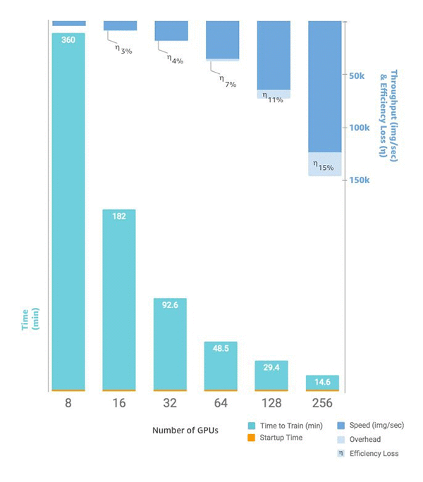

Distributed training in Amazon SageMaker
SageMaker provides distributed training libraries and supports various distributed training
options for deep learning tasks such as computer vision (CV) and natural language processing
(NLP). With SageMaker’s distributed training libraries, you can run highly scalable and
cost-effective custom data parallel and model parallel deep learning training jobs. You can also
use other distributed training frameworks and packages such as PyTorch DistributedDataParallel
(DDP), torchrun, MPI (mpirun), and parameter server. Throughout the
documentation, instructions and examples focus on how to set up the distributed training options
for deep learning tasks using the SageMaker Python SDK.
Tip
To learn best practices for distributed computing of machine learning (ML) training and processing jobs in general, see Distributed computing with SageMaker best practices.
Before you get started
SageMaker Training supports distributed training on a single instance as well as multiple
instances, so you can run any size of training at scale. We recommend you to use the framework
estimator classes such as PyTorchCreateTrainingJob API in the
backend, finds the Region where your current sessions is running, and pulls one of the
pre-built AWS deep learning container prepackaged with a number of libraries including deep
learning frameworks, distributed training frameworks, and the EFA driver. If you want to mount an FSx file
system to the training instances, you need to pass your VPC subnet and security group ID to
the estimator. Before running your distributed training job in SageMaker, read the following
general guidance on the basic infrastructure setup.
Availability zones and network backplane
When using multiple instances (also callednodes),
it’s important to understand the network that connects the instances, how they read the
training data, and how they share information between themselves. For example, when you run
a distributed data-parallel training job, a number of factors, such as communication between
the nodes of a compute cluster for running the AllReduce operation and data
transfer between the nodes and data storage in Amazon Simple Storage Service or Amazon FSx for Lustre, play a crucial
role to achieve an optimal use of compute resources and a faster training speed. To reduce
communication overhead, make sure that you configure instances, VPC subnet, and data storage
in the same AWS Region and Availability Zone.
GPU instances with faster network and high-throughput storage
You can technically use any instances for distributed training. For cases where you need
to run multi-node distributed training jobs for training large models, such as large
language models (LLMs) and diffusion models, which require faster inter-node commutation, we
recommend EFA-enabled GPU instances supported by SageMaker
Get started with distributed training in Amazon SageMaker
If you’re already familiar with distributed training, choose one of the following options that matches your preferred strategy or framework to get started. If you want to learn about distributed training in general, see Basic distributed training concepts.
The SageMaker distributed training libraries are optimized for the SageMaker training environment, help adapt your distributed training jobs to SageMaker, and improve training speed and throughput. The libraries offer both data parallel and model parallel training strategies. They combine software and hardware technologies to improve inter-GPU and inter-node communications, and extend SageMaker’s training capabilities with built-in options that require minimal code changes to your training scripts.
Use the SageMaker data parallelism library (SMDDP)
To use SageMaker's data parallelism library, configure the distribution parameter
of the SageMaker framework estimators. Supported framework estimators are PyTorchml.p4d.24xlarge
instances.
from sagemaker.frameworkimportFrameworkestimator =Framework( ..., instance_count=2, instance_type="ml.p4d.24xlarge", distribution={"smdistributed" : {"dataparallel" : {"enabled" : True}}} )
To learn how to prepare your training script and launch a distributed data-parallel
training job, see SageMaker's data parallelism library (see
also Distributed Training APIs
Use the SageMaker model parallelism library (SMP)
SageMaker provides the SMP library and supports various distributed training techniques, such as sharded data parallelism, pipelining, tensor parallelism, optimizer state sharding, and more. To learn more about what the SMP library offers, see Core Features of the SageMaker Model Parallelism Library.
To use SageMaker's model parallelism library, configure the distribution parameter
of the SageMaker framework estimators. Supported framework estimators are PyTorchml.p4d.24xlarge instances.
from sagemaker.frameworkimportFrameworkdistribution={ "smdistributed": { "modelparallel": { "enabled":True, "parameters": { ... # enter parameter key-value pairs here } }, }, "mpi": { "enabled" : True, ... # enter parameter key-value pairs here } } estimator =Framework( ..., instance_count=2, instance_type="ml.p4d.24xlarge", distribution=distribution )
To learn how to adapt your training script, configure distribution parameters in the
estimator class, and launch a distributed training job, see SageMaker's model parallelism library (see also Distributed Training APIs
Use open source distributed training frameworks
SageMaker also supports the following options to operate mpirun and
torchrun in the backend.
-
To use PyTorch DistributedDataParallel (DDP)
in SageMaker with the mpirunbackend, adddistribution={"pytorchddp": {"enabled": True}}to your PyTorch estimator. For more information, see also PyTorch Distributed Trainingand SageMaker PyTorch Estimator 's distributionargument in the SageMaker Python SDK documentation.Note
This option is available for PyTorch 1.12.0 and later.
from sagemaker.pytorch import PyTorch estimator = PyTorch( ..., instance_count=2, instance_type="ml.p4d.24xlarge", distribution={"pytorchddp": {"enabled": True}} # runs mpirun in the backend ) -
SageMaker supports the PyTorch
torchrunlauncherfor distributed training on GPU-based Amazon EC2 instances, such as P3 and P4, as well as Trn1 powered by the AWS Trainium device. To use PyTorch DistributedDataParallel (DDP)
in SageMaker with the torchrunbackend, adddistribution={"torch_distributed": {"enabled": True}}to the PyTorch estimator.Note
This option is available for PyTorch 1.13.0 and later.
The following code snippet shows an example of constructing a SageMaker PyTorch estimator to run distributed training on two
ml.p4d.24xlargeinstances with thetorch_distributeddistribution option.from sagemaker.pytorch import PyTorch estimator = PyTorch( ..., instance_count=2, instance_type="ml.p4d.24xlarge", distribution={"torch_distributed": {"enabled": True}} # runs torchrun in the backend )For more information, see Distributed PyTorch Training
and SageMaker PyTorch Estimator 's distributionargument in the SageMaker Python SDK documentation.Notes for distributed training on Trn1
A Trn1 instance consists of up to 16 Trainium devices, and each Trainium device consists of two NeuronCores
. For specs of the AWS Trainium devices, see Trainium Architecture in the AWS Neuron Documentation. To train on the Trainium-powered instances, you only need to specify the Trn1 instance code,
ml.trn1.*, in string to theinstance_typeargument of the SageMaker PyTorch estimator class. To find available Trn1 instance types, see AWS Trn1 Architecturein the AWS Neuron documentation. Note
SageMaker Training on Amazon EC2 Trn1 instances is currently available only for the PyTorch framework in the AWS Deep Learning Containers for PyTorch Neuron starting v1.11.0. To find a complete list of supported versions of PyTorch Neuron, see Neuron Containers
in the AWS Deep Learning Containers GitHub repository. When you launch a training job on Trn1 instances using the SageMaker Python SDK, SageMaker automatically picks up and runs the right container from Neuron Containers
provided by AWS Deep Learning Containers. The Neuron Containers are prepackaged with training environment settings and dependencies for easier adaptation of your training job to the SageMaker Training platform and Amazon EC2 Trn1 instances. Note
To run your PyTorch training job on Trn1 instances with SageMaker, you should modify your training script to initialize process groups with the
xlabackend and use PyTorch/XLA. To support the XLA adoption process, the AWS Neuron SDK provides PyTorch Neuron that uses XLA to make conversion of PyTorch operations to Trainium instructions. To learn how to modify your training script, see Developer Guide for Training with PyTorch Neuron ( torch-neuronx)in the AWS Neuron Documentation. For more information, see Distributed Training with PyTorch Neuron on Trn1 instances
and SageMaker PyTorch Estimator 's distributionargument in the SageMaker Python SDK documentation. -
To use MPI in SageMaker, add
distribution={"mpi": {"enabled": True}}to your estimator. The MPI distribution option is available for the following frameworks: MXNet, PyTorch, and TensorFlow. -
To use a parameter server in SageMaker, add
distribution={"parameter_server": {"enabled": True}}to your estimator. The parameter server option is available for the following frameworks: MXNet, PyTorch, and TensorFlow.Tip
For more information about using the MPI and parameter server options per framework, use the following links to the SageMaker Python SDK documentation.
-
MXNet Distributed Training
and SageMaker MXNet Estimator 's distributionargument -
PyTorch Distributed Training
and SageMaker PyTorch Estimator 's distributionargument -
TensorFlow Distributed Training
and SageMaker TensorFlow Estimator 's distributionargument.
-
Basic distributed training concepts
SageMaker’s distributed training libraries use the following distributed training terms and features.
Datasets and Batches
-
Training Dataset: All of the data you use to train the model.
-
Global batch size: The number of records selected from the training dataset in each iteration to send to the GPUs in the cluster. This is the number of records over which the gradient is computed at each iteration. If data parallelism is used, it is equal to the total number of model replicas multiplied by the per-replica batch size:
global batch size = (the number of model replicas) * (per-replica batch size). A single batch of global batch size is often referred to as the mini-batch in machine learning literature. -
Per-replica batch size: When data parallelism is used, this is the number of records sent to each model replica. Each model replica performs a forward and backward pass with this batch to calculate weight updates. The resulting weight updates are synchronized (averaged) across all replicas before the next set of per-replica batches are processed.
-
Micro-batch: A subset of the mini-batch or, if hybrid model and data parallelism is used , it is a subset of the per-replica sized batch . When you use SageMaker’s distributed model parallelism library, each micro-batch is fed into the training pipeline one-by-one and follows an execution schedule defined by the library's runtime.
Training
-
Epoch: One training cycle through the entire dataset. It is common to have multiple iterations per an epoch. The number of epochs you use in training is unique on your model and use case.
-
Iteration: A single forward and backward pass performed using a global batch sized batch (a mini-batch) of training data. The number of iterations performed during training is determined by the global batch size and the number of epochs used for training. For example, if a dataset includes 5,000 samples, and you use a global batch size of 500, it will take 10 iterations to complete a single epoch.
-
Learning rate: A variable that influences the amount that weights are changed in response to the calculated error of the model. The learning rate plays an important role in the model’s ability to converge as well as the speed and optimality of convergence.
Instances and GPUs
-
Instances: An AWS machine learning compute instance
. These are also referred to as nodes. -
Cluster size: When using SageMaker's distributed training library, this is the number of instances multiplied by the number of GPUs in each instance. For example, if you use two ml.p3.8xlarge instances in a training job, which have 4 GPUs each, the cluster size is 8. While increasing cluster size can lead to faster training times, communication between instances must be optimized; Otherwise, communication between the nodes can add overhead and lead to slower training times. The SageMaker distributed training library is designed to optimize communication between Amazon EC2 ML compute instances, leading to higher device utilization and faster training times.
Distributed Training Solutions
-
Data parallelism: A strategy in distributed training where a training dataset is split up across multiple GPUs in a compute cluster, which consists of multiple Amazon EC2 ML Instances. Each GPU contains a replica of the model, receives different batches of training data, performs a forward and backward pass, and shares weight updates with the other nodes for synchronization before moving on to the next batch and ultimately another epoch.
-
Model parallelism: A strategy in distributed training where the model partitioned across multiple GPUs in a compute cluster, which consists of multiple Amazon EC2 ML Instances. The model might be complex and have a large number of hidden layers and weights, making it unable to fit in the memory of a single instance. Each GPU carries a subset of the model, through which the data flows and the transformations are shared and compiled. The efficiency of model parallelism, in terms of GPU utilization and training time, is heavily dependent on how the model is partitioned and the execution schedule used to perform forward and backward passes.
-
Pipeline Execution Schedule (Pipelining): The pipeline execution schedule determines the order in which computations (micro-batches) are made and data is processed across devices during model training. Pipelining is a technique to achieve true parallelization in model parallelism and overcome the performance loss due to sequential computation by having the GPUs compute simultaneously on different data samples. To learn more, see Pipeline Execution Schedule.
Advanced concepts
Machine Learning (ML) practitioners commonly face two scaling challenges when training models: scaling model size and scaling training data. While model size and complexity can result in better accuracy, there is a limit to the model size you can fit into a single CPU or GPU. Furthermore, scaling model size may result in more computations and longer training times.
Not all models handle training data scaling equally well because they need to ingest all the training data in memory for training. They only scale vertically, and to bigger and bigger instance types. In most cases, scaling training data results in longer training times.
Deep Learning (DL) is a specific family of ML algorithms consisting of several layers of artificial neural networks. The most common training method is with mini-batch Stochastic Gradient Descent (SGD). In mini-batch SGD, the model is trained by conducting small iterative changes of its coefficients in the direction that reduces its error. Those iterations are conducted on equally sized subsamples of the training dataset called mini-batches. For each mini-batch, the model is run in each record of the mini-batch, its error measured and the gradient of the error estimated. Then the average gradient is measured across all the records of the mini-batch and provides an update direction for each model coefficient. One full pass over the training dataset is called an epoch. Model trainings commonly consist of dozens to hundreds of epochs. Mini-batch SGD has several benefits: First, its iterative design makes training time theoretically linear of dataset size. Second, in a given mini-batch each record is processed individually by the model without need for inter-record communication other than the final gradient average. The processing of a mini-batch is consequently particularly suitable for parallelization and distribution.
Parallelizing SGD training by distributing the records of a mini-batch over different computing devices is called data parallel distributed training, and is the most commonly used DL distribution paradigm. Data parallel training is a relevant distribution strategy to scale the mini-batch size and process each mini-batch faster. However, data parallel training comes with the extra complexity of having to compute the mini-batch gradient average with gradients coming from all the workers and communicating it to all the workers, a step called allreduce that can represent a growing overhead, as the training cluster is scaled, and that can also drastically penalize training time if improperly implemented or implemented over improper hardware subtracts.
Data parallel SGD still requires developers to be able to fit at least the model and a single record in a computing device, such as a single CPU or GPU. When training very large models such as large transformers in Natural Language Processing (NLP), or segmentation models over high-resolution images, there may be situations in which this is not feasible. An alternative way to break up the workload is to partition the model over multiple computing devices, an approach called model-parallel distributed training.
Strategies
Distributed training is usually split by two approaches: data parallel and model parallel. Data parallel is the most common approach to distributed training: You have a lot of data, batch it up, and send blocks of data to multiple CPUs or GPUs (nodes) to be processed by the neural network or ML algorithm, then combine the results. The neural network is the same on each node. A model parallel approach is used with large models that won’t fit in a node’s memory in one piece; it breaks up the model and places different parts on different nodes. In this situation, you need to send your batches of data out to each node so that the data is processed on all parts of the model.
The terms network and model are often used interchangeably: A large model is really a large network with many layers and parameters. Training with a large network produces a large model, and loading the model back onto the network with all your pre-trained parameters and their weights loads a large model into memory. When you break apart a model to split it across nodes, you’re also breaking apart the underlying network. A network consists of layers, and to split up the network, you put layers on different compute devices.
A common pitfall of naively splitting layers across devices is severe GPU under-utilization. Training is inherently sequential in both forward and backward passes, and at a given time, only one GPU can actively compute, while the others wait on the activations to be sent. Modern model parallel libraries solve this problem by using pipeline execution schedules to improve device utilization. However, only the Amazon SageMaker's distributed model parallel library includes automatic model splitting. The two core features of the library, automatic model splitting and pipeline execution scheduling, simplifies the process of implementing model parallelism by making automated decisions that lead to efficient device utilization.
Train with data parallel and model parallel
If you are training with a large dataset, start with a data parallel approach. If you run out of memory during training, you may want to switch to a model parallel approach, or try hybrid model and data parallelism. You can also try the following to improve performance with data parallel:
-
Change your model’s hyperparameters.
-
Reduce the batch size.
-
Keep reducing the batch size until it fits. If you reduce batch size to 1, and still run out of memory, then you should try model-parallel training.
Try gradient compression (FP16, INT8):
-
On NVIDIA TensorCore-equipped hardware, using mixed precision training
creates both speed-up and memory consumption reduction. -
SageMaker's distributed data parallelism library supports Automatic Mixed Precision (AMP) out of the box. No extra action is needed to enable AMP other than the framework-level modifications to your training script. If gradients are in FP16, the SageMaker data parallelism library runs its
AllReduceoperation in FP16. For more information about implementing AMP APIs to your training script, see the following resources:-
Frameworks - PyTorch
in the NVIDIA Deep Learning Performance documentation -
Frameworks - TensorFlow
in the NVIDIA Deep Learning Performance documentation -
Automatic Mixed Precision for Deep Learning
in the NVIDIA Developer Docs -
Introducing native PyTorch automatic mixed precision for faster training on NVIDIA GPUs
in the PyTorch Blog -
TensorFlow mixed precision APIs
in the TensorFlow documentation
-
Try reducing the input size:
-
Reduce the NLP sequence length if you increase the sequence link, need to adjust the batch size down, or adjust the GPUs up to spread the batch.
-
Reduce image resolution.
Check if you use batch normalization, since this can impact convergence. When you use distributed training, your batch is split across GPUs and the effect of a much lower batch size can be a higher error rate thereby disrupting the model from converging. For example, if you prototyped your network on a single GPU with a batch size of 64, then scaled up to using four p3dn.24xlarge, you now have 32 GPUs and your per-GPU batch size drops from 64 to 2. This will likely break the convergence you saw with a single node.
Start with model-parallel training when:
-
Your model does not fit on a single device.
-
Due to your model size, you’re facing limitations in choosing larger batch sizes, such as if your model weights take up most of your GPU memory and you are forced to choose a smaller, suboptimal batch size.
To learn more about the SageMaker distributed libraries, see the following:
Optimize distributed training
Customize hyperparameters for your use case and your data to get the best scaling efficiency. In the following discussion, we highlight some of the most impactful training variables and provide references to state-of-the-art implementations so you can learn more about your options. Also, we recommend that you refer to your preferred framework’s distributed training documentation.
Batch Size
SageMaker distributed toolkits generally allow you to train on bigger batches. For example, if a model fits within a single device but can only be trained with a small batch size, using either model-parallel training or data parallel training enables you to experiment with larger batch sizes.
Be aware that batch size directly influences model accuracy by controlling the amount of noise in the model update at each iteration. Increasing batch size reduces the amount of noise in the gradient estimation, which can be beneficial when increasing from very small batches sizes, but can result in degraded model accuracy as the batch size increases to large values.
Tip
Adjust your hyperparameters to ensure that your model trains to a satisfying convergence as you increase its batch size.
A number of techniques have been developed to maintain good model convergence when batch is increased.
Mini-batch size
In SGD, the mini-batch size quantifies the amount of noise present in the gradient estimation. A small mini-batch results in a very noisy mini-batch gradient, which is not representative of the true gradient over the dataset. A large mini-batch results in a mini-batch gradient close to the true gradient over the dataset and potentially not noisy enough—likely to stay locked in irrelevant minima.
To learn more about these techniques, see the following papers:
-
Accurate, Large Minibatch SGD:Training ImageNet in 1 Hour
, Goya et al. -
PowerAI DDL
, Cho et al. -
Scale Out for Large Minibatch SGD: Residual Network Training on ImageNet-1K with Improved Accuracy and Reduced Time to Train
, Codreanu et al. -
ImageNet Training in Minutes
, You et al. -
Large Batch Training of Convolutional Networks
, You et al. -
Large Batch Optimization for Deep Learning: Training BERT in 76 Minutes
, You et al. -
Accelerated Large Batch Optimization of BERT Pretraining in 54 minutes
, Zheng et al. -
Deep Gradient Compression
, Lin et al.
Scenarios
The following sections cover scenarios in which you may want to scale up training, and how you can do so using AWS resources.
Scaling from a Single GPU to Many GPUs
The amount of data or the size of the model used in machine learning can create
situations in which the time to train a model is longer that you are willing to wait.
Sometimes, the training doesn’t work at all because the model or the training data is too
large. One solution is to increase the number of GPUs you use for training. On an instance
with multiple GPUs, like a p3.16xlarge that has eight GPUs, the data and
processing is split across the eight GPUs. When you use distributed training libraries, this
can result in a near-linear speedup in the time it takes to train your model. It takes
slightly over 1/8 the time it would have taken on p3.2xlarge with one
GPU.
| Instance type | GPUs |
| p3.2xlarge | 1 |
| p3.8xlarge | 4 |
| p3.16xlarge | 8 |
| p3dn.24xlarge | 8 |
Note
The ml instance types used by SageMaker training have the same number of GPUs as the
corresponding p3 instance types. For example, ml.p3.8xlarge has the same
number of GPUs as p3.8xlarge - 4.
Scaling from a single instance to multiple instances
If you want to scale your training even further, you can use more instances. However, you should choose a larger instance type before you add more instances. Review the previous table to see how many GPUs are in each p3 instance type.
If you have made the jump from a single GPU on a p3.2xlarge to four GPUs on
a p3.8xlarge, but decide that you require more processing power, you may see
better performance and incur lower costs if you choose a p3.16xlarge before
trying to increase instance count. Depending on the libraries you use, when you keep your
training on a single instance, performance is better and costs are lower than a scenario
where you use multiple instances.
When you are ready to scale the number of instances, you can do this with SageMaker Python
SDK estimator function by setting your instance_count. For
example, you can set instance_type = p3.16xlarge and instance_count =
2. Instead of the eight GPUs on a single p3.16xlarge, you have 16 GPUs
across two identical instances. The following chart shows scaling and throughput starting with eight GPUs

Custom training scripts
While SageMaker makes it simple to deploy and scale the number of instances and GPUs, depending on your framework of choice, managing the data and results can be very challenging, which is why external supporting libraries are often used. This most basic form of distributed training requires modification of your training script to manage the data distribution.
SageMaker also supports Horovod and implementations of distributed training native to each
major deep learning framework. If you choose to use examples from these frameworks, you can
follow SageMaker’s container guide for Deep Learning Containers, and various example notebooks